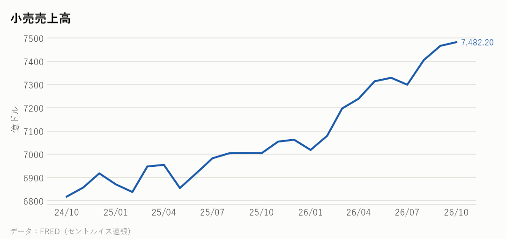
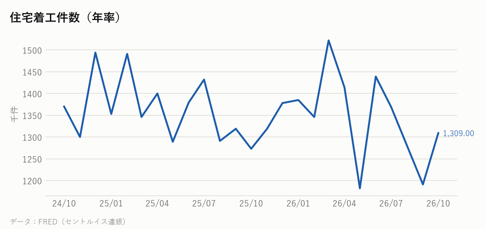

米国経済のまとめ｜毎週土曜
11/16〜11/20の米国経済：株価急落と利上げ発言が重なった週
11/16〜11/20のまとめ
11/16〜11/20の1週間で、S&P500は-8.61%、ナスダック総合は-10.02%、ダウ平均は-8.02%、半導体指数（SOX）は-17.13%。恐怖・強欲指数（独自）は28で「恐怖」。
雇用は持ち直しの流れで、失業率は6か月前の4.3%から4.1%に、雇用者数の増減（3か月平均）は3か月前の+2.8万人から+13.7万人になりました。一方でCPI（消費者物価指数）の前年比は1年前の3.0%から3.7%に上がり、政策金利（FRBが決める短期の金利）の月平均は3か月前の3.63%から3.88%へ、10年債利回りの月平均は1年前の4.09%から4.99%へ上がっています。
長短金利差（10年債と2年債の利回りの差）は+0.30ポイントです。過去の統計では、逆イールド（短期の金利が長期より高い状態）が終わった後に景気後退が始まった回が4回ありますが、今は終わってから27か月がたち、過去の最長の22か月をこえています。サームルール（失業率の上がり方で景気後退を見る指標）は0.00と低く、S&P500の最高値からの下落率-11.6%は、過去の大きな下落（11回）の中央値-34%にはまだ届いていません。
FRBの利上げが続いて株価の調整が長引くシナリオも、雇用が保たれて市場が落ち着くシナリオも考えられます。次は11/25のGDPと新規失業保険の申請件数、12/4の雇用統計、12/10のCPIに注目です。
数字で見る11/16〜11/20
| 今 | 1週間・3か月 | 年初から・1年前 | |
|---|---|---|---|
| S&P500 | 6,910.39 | -8.61% | +0.8% |
| ナスダック総合 | 22,617.73 | -10.02% | -2.7% |
| ダウ平均 | 48,147.33 | -8.02% | -0.5% |
| 半導体指数（SOX） | 8,408.59 | -17.13% | +14.1% |
| 恐怖・強欲指数（独自） | 28（恐怖） | 1週間前 41 | 1か月前 40 |
| 失業率（2026年10月） | 4.1% | 3か月前 4.1% | 1年前 ― |
| CPI 前年比（2026年9月） | 3.7% | 3か月前 3.5% | 1年前 3.0% |
| 政策金利（実効・月平均）（2026年10月） | 3.88% | 3か月前 3.63% | 1年前 4.09% |
| 10年債の利回り（月平均）（2026年11月） | 4.99% | 3か月前 4.68% | 1年前 4.09% |
| 長短金利の差（10年−2年・月平均）（2026年11月） | +0.30ポイント | 3か月前 +0.47ポイント | 1年前 +0.54ポイント |
※株価指数は 11/20 の終値。月平均と書いたものは、その月の毎日の値の平均。
恐怖・強欲指数は、株価の勢い・VIX・株と国債・低格付け社債・広がりの5つを、直近2年の中での位置（0〜100）にして平均した NasdaqWhy の独自の計算です。CNN の指数とは別物です。
商品（原油・金・穀物など）の1週間
| 値段 | 1週間 | 1年 | |
|---|---|---|---|
| 原油（WTI） | 83.62 ドル/バレル | -5.6% | +41.4% |
| 天然ガス | 3.79 ドル | +17.4% | -15.3% |
| 金 | 3,539.00 ドル/オンス | -8.9% | -12.8% |
| 銀 | 41.08 ドル/オンス | -16.2% | -18.2% |
| 銅 | 5.47 ドル/ポンド | -10.1% | +10.2% |
| 小麦 | 593.00 セント/ブッシェル | -0.0% | +12.5% |
| トウモロコシ | 448.75 セント/ブッシェル | +0.7% | +5.2% |
| 大豆 | 1,220.50 セント/ブッシェル | -1.8% | +8.7% |
先物の終値（11/20）。データ：Yahoo Finance。
11/16〜11/20の主なニュース
- 世界的な原油の供給過剰への心配が強まり、WTI原油が5%以上下がりました。（Crude Oil Prices Today | OilPrice.com 11/20）
- 米農務省の報告で、トウモロコシと大豆の期末在庫の見通しが引き下げられました。（Morning Ag Clips 11/18）
- 新しいレイオフ（人員削減）のデータで、今年これまでの削減数は41%減っています。（WSJ 11/20）
- 住宅会社のパーリッシュ・ホームズが、厳しい住宅市場の中でレイオフを発表しました。（Metaintro 11/19）
有名人のコメント（ニュースの見出しより）
- アルベルト・ムサレム（セントルイス連銀総裁）：2027年春までに何回かの利上げが必要になりそうだと述べました。（WSJ 11/17）
- ジョン・ウィリアムズ（ニューヨーク連銀総裁）：「劇的な」金利の動きは必要ないと述べました。（Bloomberg.com 11/17）
- リサ・クック（FRB理事）：高いインフレを下げるには利上げが必要だと話しました。（Reuters 11/20）
- ニール・カシュカリ（ミネアポリス連銀総裁）：市場はFRBの高官たちよりも多くの利上げを見込んでいると述べました。（investingLive 11/18）
- スコット・ベッセント（財務長官）：FRBに対し、原油の値動きにとらわれずに判断するよう求めました。（Yahoo Finance 11/16）
次に注目するデータ
- 11/25：GDP（速報など）
- 11/25：新規失業保険の申請件数
- 12/4：雇用統計（失業率・雇用者数）
- 12/10：消費者物価指数（CPI）
- 失業率が 5.6%以上になると、サームルールが計算上 0.50（景気後退のサインとされる水準）に届く
考えられるシナリオ
予想ではなく、今のデータと過去の統計から考えられるシナリオと、そのときのデータの出方です。
- 利上げで減速：FRBが利上げを続け、景気がゆっくり冷えていくシナリオです。
サイン：政策金利や10年債の利回りが上がり、雇用者数の伸びが小さくなります。 - 底堅い景気：雇用が保たれ、株価の下落が一時的なものにとどまるシナリオです。
サイン：失業率が横ばいで、新規失業保険の申請が少ないまま、VIXが下がります。 - 景気後退入り：失業率が上がり、景気後退に向かうシナリオです。
サイン：新規失業保険の申請が増え、失業率が5.6%に近づいてサームルールが上がります。
有名投資家の売買（13F）
運用額の大きい投資会社が3か月ごとに出す保有株の報告（四半期末から45日以内に提出）。前の四半期と比べた変化です。
バークシャー・ハサウェイ（ウォーレン・バフェット） この週に提出
2026-09-30時点（2026-11-16提出）。保有の合計 3,042億ドル。上位：APPLE INC（25%）、AMERICAN EXPRESS CO（15%）、COCA COLA CO（11%）、ALPHABET INC（9%）、BANK OF AMER CORP（8%）
- DELTA AIR LINES INC：買い増し（株数 +12%）
- LENNAR CORP：買い増し（株数 +99%）
- KROGER CO：一部を売った（株数 -10%）
- VERISIGN INC：一部を売った（株数 -34%）
- BENDING SPOONS SPA：新しく買った
- NUCOR CORP：一部を売った（株数 -15%）
デュケーヌ・ファミリー・オフィス（スタンレー・ドラッケンミラー） この週に提出
2026-09-30時点（2026-11-16提出）。保有の合計 415万ドル。上位：Natera Inc（31%）、Seagate Technology Hldngs Pl（8%）、Amazon Com Inc（5%）、Fox Corp（5%）、Ypf Sociedad Anonima（4%）
- Seagate Technology Hldngs Pl：買い増し（株数 +180%）
- Amazon Com Inc：買い増し（株数 +43%）
- Fox Corp：買い増し（株数 +38%）
- Ypf Sociedad Anonima：買い増し（株数 +13%）
- Unity Software Inc：買い増し（株数 +436%）
- Sea Ltd：買い増し（株数 +45%）
アパルーサ（デビッド・テッパー） この週に提出
2026-09-30時点（2026-11-16提出）。保有の合計 76億ドル。上位：MICRON TECHNOLOGY INC（18%）、AMAZON COM INC（15%）、TAIWAN SEMICONDUCTOR MANUFAC（10%）、SPACE EXPLORATION TECHN CORP（7%）、UBER TECHNOLOGIES INC（7%）
- MICRON TECHNOLOGY INC：買い増し（株数 +28%）
- AMAZON COM INC：一部を売った（株数 -10%）
- SPACE EXPLORATION TECHN CORP：買い増し（株数 +1626%）
- NVIDIA CORPORATION：買い増し（株数 +31%）
- ISHARES INC：一部を売った（株数 -13%）
- META PLATFORMS INC：一部を売った（株数 -22%）
ブリッジウォーター（レイ・ダリオが創業） この週に提出
2026-09-30時点（2026-11-16提出）。保有の合計 230億ドル。上位：STATE STR SPDR S&P 500 ETF T（11%）、ISHARES TR（5%）、NVIDIA CORPORATION（3%）、BROADCOM INC（2%）、LAM RESEARCH CORP（2%）
- STATE STR SPDR S&P 500 ETF T：一部を売った（株数 -36%）
- ISHARES TR：一部を売った（株数 -50%）
- NVIDIA CORPORATION：一部を売った（株数 -30%）
- LAM RESEARCH CORP：買い増し（株数 +13%）
- APPLIED MATLS INC：買い増し（株数 +93%）
- MICRON TECHNOLOGY INC：買い増し（株数 +103%）
経営陣・大株主の自社株の売買（11/16〜11/20の Form 4）
取引所で売った・買った分（ストックオプションの行使などは除く）。「10b5-1」は、Form 4 に前もって決めた売却計画（10b5-1）による取引と表示されているもの。表示がなくても、事前の計画が一切なかったとは限りません。
| 会社 | 人 | 金額 | 10b5-1 | |
|---|---|---|---|---|
| AMD | Su Lisa T Chair, President & CEO | 売り | 3,549万ドル | あり |
| アップル | LEVINSON ARTHUR D 取締役 | 売り | 3,177万ドル | ― |
| メタ | LI SUSAN J Chief Financial Officer | 売り | 709万ドル | あり |
| AMD | Norrod Forrest Eugene EVP & GM DSG | 売り | 506万ドル | あり |
| メタ | Bosworth Andrew Chief Technology Officer | 売り | 490万ドル | あり |
| パランティア | Moore Alexander D. 取締役 | 売り | 269万ドル | あり |
| メタ | Olivan Javier Chief Operating Officer | 売り | 100万ドル | あり |
| アマゾン | Herrington Douglas J CEO Worldwide Amazon Stores | 売り | 98万ドル | あり |
| メタ | Mahoney Curtis J. Chief Legal Officer | 売り | 97万ドル | あり |
| アップル | Newstead Jennifer SVP, GC and Government Affairs | 売り | 85万ドル | あり |
| オクロ | Goodwin William Carroll Murphy Chief Strategy Officer | 売り | 27万ドル | ― |
| アマゾン | Huttenlocher Daniel P 取締役 | 売り | 20万ドル | あり |
過去の統計から見る、今の位置
データ：FRED（景気後退の月は全米経済研究所 NBER の判定）、Yahoo Finance。過去の例は回数が少ないため目安です。景気後退の判定は後から決まるため、最近の月はまだ判定されていないことがあります。
1976年以降の逆イールド（2か月以上）は 8回。そのうち 6回は、始まってから4年以内に景気後退が始まった。開始から景気後退までは 11〜23か月（中央値 18か月）。2回は逆イールドの間に、4回はプラスに戻ってから始まった。プラスに戻ってから始まった回は、戻ってから 4〜22か月後（中央値 10か月）。 今（2026年11月の平均）は +0.30ポイント。直近の逆イールドは 2022年7月〜2024年8月で、終わってから 27か月。
サームルールは 2026年10月が 0.00。1959年以降、0.50を上回ったのは 13回で、そのうち 11回は前後1年以内に景気後退が始まっていた。最新の失業率は 4.1%（2026年10月）。計算上、次の月の失業率が 5.6%以上になると 0.50 に届く。
今の失業率 4.1%は、過去12か月の最低から +0.0ポイント。過去の景気後退が始まる直前は、同じ上昇幅の中央値が +0.3ポイントだった（11回）。
1950年以降、S&P500が高値から20%以上下がったのは 11回。そのうち 7回は景気後退と重なった。今は最高値（2026/10/06）から -11.6%。表は、高値をつけた月の失業率・政策金利・物価・長短金利差。
新しく発表された指標
毎日・毎週の数字
| 新規失業保険の申請件数（週） | 11/14までの1週間は 20.3万件。 |
|---|---|
| 政策金利（FRBの目標） | 11/20時点で 3.75〜4.00%。 |
| 2年債と10年債の利回り | 11/19時点で、2年債は 4.76%、10年債は 5.04%。 |
| 長短金利の差（10年−2年） | 11/20時点で +0.29ポイント（10年債の方が高い）。 |
| FRBの総資産 | 11/18時点で 6.74兆ドル。 |
| NY連銀 SOMA（FRBが持つ国債など） | 11/18時点で 6.36兆ドル。 |
| 米国の政府の借金（債務残高） | 11/19時点で 40.71兆ドル。 |
| 住宅ローン金利（30年固定） | 11/19の週は 7.28%。 |
| 原油の商業在庫（戦略備蓄を除く） | 11/13までの週で 417.8百万バレル。 |
| 戦略石油備蓄（SPR） | 11/13までの週で 276.4百万バレル。 |
| ガソリン価格（レギュラー・全米平均） | 11/16の週は 1ガロン 3.81ドル。 |
| 銀行がFRBに預けているお金（準備預金） | 11/18は 2.98兆ドル。 |
| リバースレポ（FRBにあずけられたお金） | 11/20は 4億ドル。 |
| 財務省の口座（TGA） | 11/18は 0.92兆ドル。 |
| 恐怖指数（VIX） | 11/20の終値は 35.89。 |
| NasdaqWhy 恐怖・強欲指数（独自の計算） | 11/19は 28（恐怖）。 |
小売売上高
2026年10月は 7,482億ドル。前回は 7,466億ドル、1年前は 7,004億ドル。

住宅着工件数（年率）
2026年10月は 1,309千件。前回は 1,191千件、1年前は 1,273千件。

11/16〜11/20の半導体トピック
米国に加えて、韓国・日本・台湾などの会社の動き（ニュースの見出しより）。
- マイクロンが台湾のHBM新工場の計画を一時止めたとの報道が出た。（shattered.io）
- DRAM価格カルテル訴訟で、メモリー大手への審理が続くことになった。（Tom's Hardware、TrendForce）
- SK hynixが次世代HBMの増産に向け、新たな装置の発注を計画している。（TrendForce、XenoSpectrum）
- GF証券がNANDの価格予想を下げ、供給過剰を警告した。（24/7 Wall St.）
- DRAMの価格カルテル訴訟で、メモリー大手の棄却の訴えが退けられた。（PYMNTS.com、PYMNTS.com）
- アプライド・マテリアルズはAI需要を受け、装置の生産を倍増させる計画だ。（THE ELEC, Korea Electronics Industry Media）
- 消費者向けNANDのスポット価格が下落し、供給過剰が意識されている（Tom's Hardware、TrendForce）
- エヌビディアはサムスン電子とSK hynixからHBM4の調達を進める（파이낸셜뉴스）
- TrendForceによると、グーグルはTPU向けHBMの直接購入を検討している（TrendForce）
- TSMCとサムスン電子が、中国の顧客向けの一部出荷を止めた（Financial Times）
- 中国CXMTの売上が急増し、DRAMの品薄は続く見通し（Businesskorea）
- インテルが最新の受託製造プロセスで初めての顧客を得た（digitimes）
- トレンドフォースがNAND価格の先行きに弱気な見方を示した（Yahoo Finance、Crypto Briefing）
- AI需要で基板（PCB）の世界的な供給不足が深刻になっている（digitimes）
- マイクロンがシンガポールのHBM新工場に最初の装置を入れた（digitimes）
- DRAMの供給が引き締まる中、HBM4の値段は来年最大2.7倍に上がるとの見通しが出ています。（BusinessKorea）
- メモリーの品不足が続き、在庫が10日分を下回っています。（shattered.io）
- サムスンとアップルが、複数年のDRAM供給契約に近づいていると報じられました。（Yahoo Finance）
- SK hynixがHBM4向けの新しい装置の発注を計画しており、P&T6工場が注目されています。（TrendForce）
- SK hynixが、保有するキオクシアの社債を株に転換するかを検討しています。（BusinessKorea）
- 米国が中国の半導体入手を制限すると発表し、サムスン電子とTSMCの株が下がりました。（Reuters）
- サムスンディスプレイとLGディスプレイが、2027年にOLEDモニター用パネルの値上げを計画しています。（TheElec）
- LGディスプレイが、坡州（パジュ）での3兆ウォンのOLED投資を取りやめました。（TheElec）
11/16〜11/20の決算の解説
- 百度（Baidu）（2026年7〜9月期）：AIクラウドはほぼ2倍なのに、なぜ売上は減った？――広告の2割減と、検索の主役交代
- エヌビディア（2026年8〜10月期（2027年度第3四半期））：社長が辞めた直後の決算。売上は2倍なのに、なぜ利益率の見通しは下がる？
- パロアルトネットワークス（2026年8〜10月期（2027年度第1四半期））：売上は39%増なのに、なぜ営業利益は7割減った？――買収の重い費用と、一度きりの税の戻り
- Tencent（騰訊）（2026年7〜9月期）：売上は8%増えたのに、なぜ利益は6%減った？――AIを除いた「実勢」は+8%
- Alibaba（阿里巴巴）（2026年7〜9月期）：クラウドは53%増なのに、なぜ来年は「30〜45%」に鈍ると言った？
- ウォルマート（2026年8〜10月期（2027年度第3四半期））：営業利益は16%増えたのに、なぜ純利益は2割減った？
データ：FRED（セントルイス連銀。もとは米労働省・米商務省・FRB など）、米エネルギー情報局（EIA）、ニューヨーク連銀、米財務省、SEC（13F・Form 4）、Yahoo Finance。コメントはニュースの見出しの要約です。
📝 note でも読めます（図つき・まとめ）：note.com/nasdaqwhy